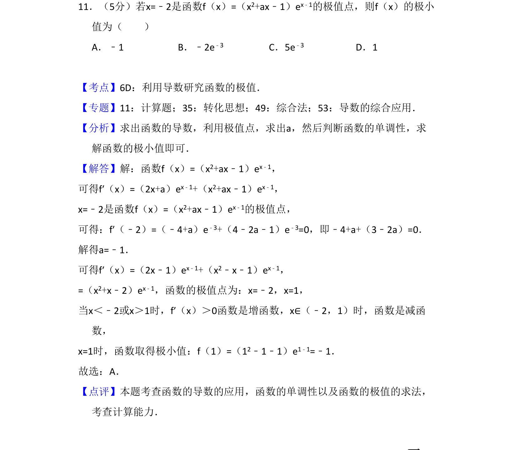
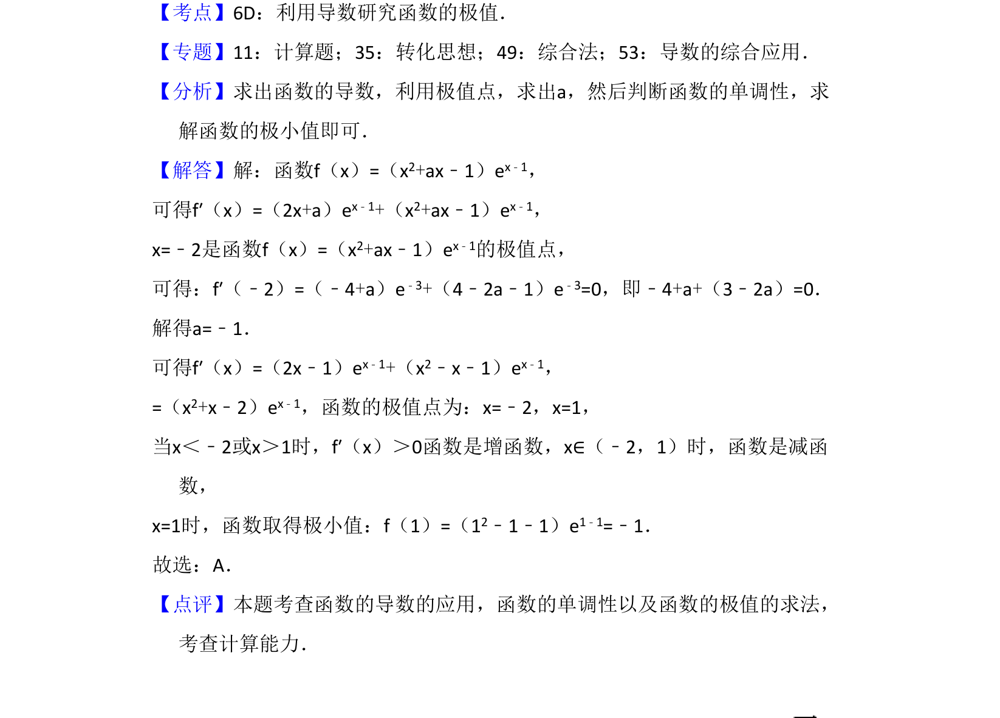

考点：利用导数研究函数的极值 函数单调性 导数运算

已知极值点求参数，再求函数的极小值

📄 原 PDF 第 10 页：
素材/真题/吉林/2008-2024·（吉林）数学高考真题/2017年高考数学试卷（理）（新课标Ⅱ）（解析卷）.pdf
11．（5分）若x=﹣2是函数f（x）=（x2+ax﹣1）ex﹣1的极值点，则f（x）的极小 值为（ ） A．﹣1 B．﹣2e ﹣3 C．5e﹣3 D．1
【考点】6D：利用导数研究函数的极值．菁优网版权所有 【专题】11：计算题；35：转化思想；49：综合法；53：导数的综合应用． 【分析】求出函数的导数，利用极值点，求出a，然后判断函数的单调性，求 解函数的极小值即可． 【解答】解：函数f（x）=（x2+ax﹣1）ex﹣1， 可得f′（x）=（2x+a）ex﹣1+（x2+ax﹣1）ex﹣1， x=﹣2是函数f（x）=（x2+ax﹣1）ex﹣1的极值点， 可得：f′（﹣2）=（﹣4+a）e﹣3+（4﹣2a﹣1）e﹣3=0，即﹣4+a+（3﹣2a）=0． 解得a=﹣1． 可得f′（x）=（2x﹣1）ex﹣1+（x2﹣x﹣1）ex﹣1， =（x2+x﹣2）ex﹣1，函数的极值点为：x=﹣2，x=1， 当x＜﹣2或x＞1时，f′（x）＞0函数是增函数，x∈（﹣2，1）时，函数是减函 数， x=1时，函数取得极小值：f（1）=（12﹣1﹣1）e1﹣1=﹣1． 故选：A． 【点评】本题考查函数的导数的应用，函数的单调性以及函数的极值的求法， 考查计算能力．